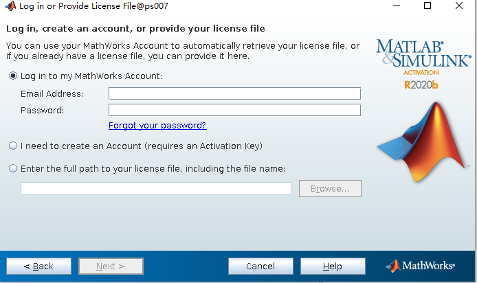

软件安装
Matlab
大部分软件都是免费的，但有些软件是商业软件需要配置密钥。这里只介绍 Matlab 的激活。 为了离线也能正常使用，如果是清华的同学，建议使用清华账户激活，仅对个人用户有效。
前提先连上校园网，运行 matlab, 出现以下情况时，直接点击 Next

按步骤，根据清华邮箱激活即可，如果没有注册，可以用邮箱注册。

另外，在安装 matlab 的时候，请选择网络版安装，不要使用清华邮箱激活安装，否则只能是安装的用户可以打开 matlab, 其他用户不能打开。安装网络版后，再将 licenses 中的 network.lic 文件删除即可，这样就可以让其他用户通过自己清华账户激活并离线使用。网络版安装流程(网络版必须联网才能使用，不方便)，见清华 matlab 安装手册（仅校园内网访问）。
FFTW 这个在oneAPI中的mkl已经自带，加载oneAPI环境后，只需要在编译的时候添加以下编译选项即可
-lmkl_intel_lp64 -lmkl_intel_thread -lmkl_core -liomp5 -lmkl_intel_thread